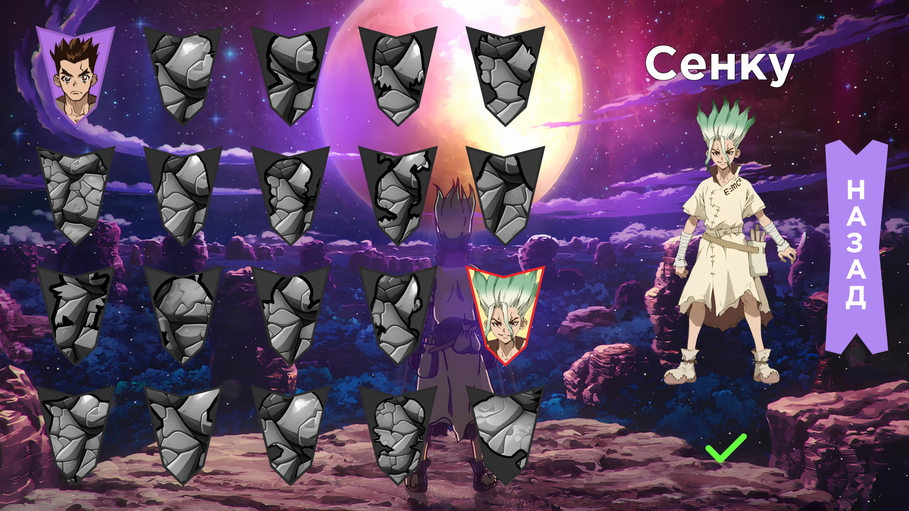
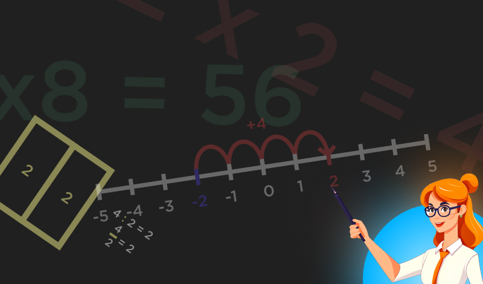

Меня зовут Дмитрий Борзов, и я - студент 2 курса РТУ МИРЭА по направлению - программная инженерия.
В мире образования я изучаю различные аспекты технических наук, но моя страсть к математике выходит за рамки учебных программ.
Я также работаю репетитором по математике, где делюсь своими знаниями и стараюсь помочь школьникам разобраться в сложных математических концепциях.
За пределами учебных и учительских обязанностей, я также увлечен разработкой 2D игр.
Создание игр - это мой способ выразить свою креативность и применить математические и программные навыки в создании интерактивных визуальных миров.
В моей жизни математика и разработка игр сливаются в увлекательное путешествие, которое позволяет мне соединить учебу, преподавание и творчество в одном увлекательном процессе.
Мои навыки охватывают широкий спектр областей и включают:
- Языки программирования: Я обладаю знаниями и опытом в программировании на таких языках, как Python, JavaScript, Java, C++, и других. Я способен разрабатывать и отлаживать программы, создавать веб-приложения, и работать над различными проектами.
- Базы данных: Я знаю SQL и имею опыт работы с реляционными базами данных, такими как MySQL.
- Искусственный интеллект и машинное обучение: Я имею базовые знания в области машинного обучения и искусственного интеллекта, и могу создавать модели машинного обучения с использованием библиотек, таких как TensorFlow и PyTorch.
- Графический дизайн и обработка изображений: Я знаком с графическими инструментами, такими как Adobe Photoshop и Illustrator, и могу создавать и редактировать изображения и графику.
- Управление проектами: Я обладаю навыками управления проектами, включая планирование, оценку задач, работу в команде и ведение документации.
- Преподавание и обучение: Я способен обучать и передавать знания другим людям, включая репетиторство по математике и программированию.
Это лишь краткий обзор моих навыков, и я всегда готов расширить свои знания и навыки, чтобы успешно выполнять разнообразные задачи и проекты.
 ДОКТОР СТОУН: КЛИКЕР  АрифметиконContact me
- Phone: 8985-883-8575
- Email: dm1tryace@yandex.ru